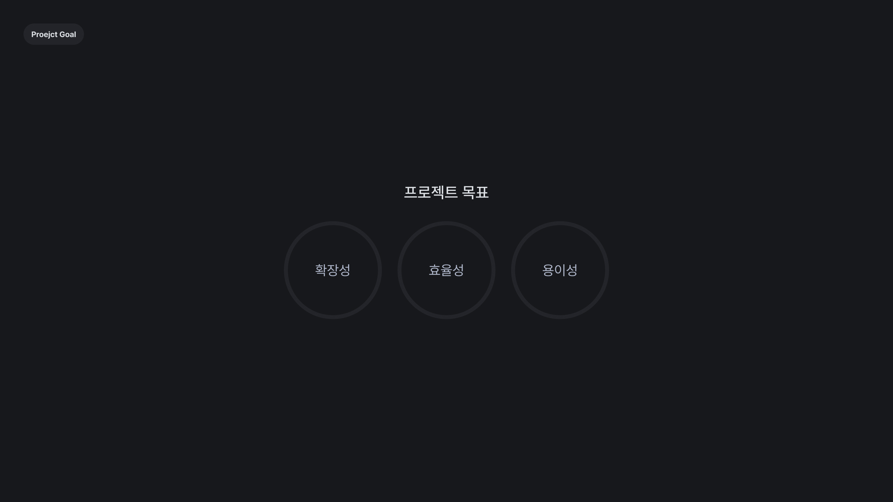
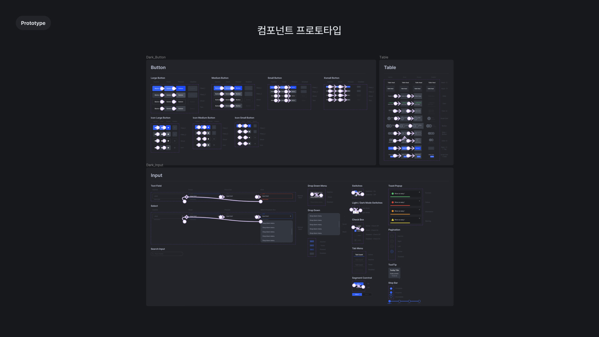

탈중앙화 거래소(Decentralized Exchange)서비스의 초기 디자인
시스템을 구축했습니다. 추후 브랜드 방향성이 개편될수도 있는
점을 감안하여 협업을 위한 UI 가이드라인을 제공하였습니다.
Photoshop Figma

협업을 위한, 협업에 의한
디자인 시스템의 방향성을 세가지의 중점으로 분류했습니다.
*확장성 : Azure Swap의 디자인 시스템은 메타크립토 인터내셔널의
운영되는 모든 가상화폐의 서비스의 대표격인 프로젝트로 추후 추가적인
서비스의 확장성을 고려하여 제작하였습니다.
*효율성 :
프로젝트의 규모가 확대될수록 유지보수의 작업량이 기하급수적으로
늘어날 것을 고려하여 초기 디자인 토큰의 설계하여 통일성을 갖추고
추후 작업의 효율에 도움을 줄 수 있도록 제작하였습니다.
*용이성 : 큰 프로젝트인 만큼 많은 인원이 디자인시스템에
따라 작업하는 만큼 관점에 따라 이해하기 쉽게 제작하려고
노력하였습니다.
협업을 위한 초기 작업이기때문에 디자인
맥락에 대한 가이드가 필요했고 실무자의 작업 공수를 줄여주는게
핵심이라고 생각했습니다.
발결된 문제점
1. 불명확한 프로젝트 범위
핵심 기능, 페이지 범위, 개발 기간, 확장서비스, 방향성 등 정할수도
정해진 기획이 하나도 없는 상황이였습니다. 모두 완벽한 상황에서
프로젝트를 임할수 있는 것은 아닌 것은 당연하다고 생각합니다. 초기
기획은 “00거래소와 유사한 느낌으로 가주세요” 전달받고 프로젝트를
진행하게 되었습니다.
2.거래소 기능에대한 이해
기능적인 이해없이 페이지를 그리는 것은 결국 본인도 납득할 수 없는
결과물이 나오게 될것이 분명했습니다. 가상화폐 거래소는 기능위주의
서비스이다보니 관리하는 페이지와의 연결 또한 고려해야했습니다. 내부
시스템에대한 이해가 부족한 상황이였습니다. 하지만 해당 내용을
탐색하는데 상당히 제한적인 부분이 존재했는데 가상화폐를 지불하지
않으면 벤치마킹을 진행하기 힘든 구조였고 ,그 외에도 기능적인
부분에서 이해하기 어려운 플로우들이 있었습니다.
명확하고 보편적인 컴포넌트 제작
페이지 전체에 일괄적으로 사용될 컴포넌트를 제작하였습니다. 하지만
충분한 논의로 정해진 기획이 없는 상태에서 변동될 여지를 고려하여
제작하였습니다. 시간적 여유가 된다면 하나씩 개선해나가면 좋겠지만
수정이 많을수록 개발 마감 기간은 지연된다는 점과 확장성을 고려하여
되도록 명확한 의미가 부여된 컴포넌트와 스타일을 제작하는데 초점을
맞췄습니다.
거래소 시스템 이해
사용되는 개념과 용어에대한 정리를 진행끝낸 후 내부 기능적인 부분들은
개발자분들과 커피챗을 통해 어느정도 기능적인 이해와 구현 여부를
체크했습니다.
과업 흐름과 기능 단위 분석(Hi-fi wireframe)
시안 제작전에 태스크 플로우를 작성하여 페이지 흐름과 기능 단위들을
정리했습니다. 그리고 논의가 필요한 부분들을 정리하였고, 기능단위가
반영되어있는 와이어프레임을 제작하였습니다. 와이어 프레임을 통해 Use
case를 파악하고 필요한 컴포넌트들을 정리하였습니다.
텍스트, 컬러 스타일 지정
확장성을 고려하려면 피그마 파일내에 사용되는 스타일들의 정의가
필요했습니다. 보여지는 색상과 텍스트의 심미성이 중점이 아닌
의미(Semactic)를 부여하는데 중점을 뒀습니다. 전체적인 일관성,
유지보수를 위해 필요한 작업이였습니다. 후에 다크, 라이트를 적용할 수
있는 점을 고려하여 제작하였습니다. 그리고 확장성을 고려하여 컬러뒤에
100단위를 넣어 네이밍하였습니다.

컴포넌트에 프로토 타입 연결
작업 효율과 개발 가이드를 위해 제작된 모든 컴포넌트단계에서
인터렉션을 연결해주어 프로토타입으로 제공하였습니다.